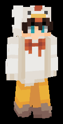

エアライド
# ティア
# 属性
# バリア獲得条件
# 使用中に反応するトリガー
# バフ
データベース
英語表記：Airride
特性肩書：継続特異飛行
高所の位置取りに適したウェポンの一つ。
アイテムを使用したときに、ブーストで宙へと羽ばたく。
一時的に得る鶏の神気により、低速落下の能力が微量に発動する。
その後、任意のタイミングでスニークをすることで羽ばたくことができる。
なお、羽ばたくのにもエネルギーを要する為、連続して永久に飛ぶことはできない。
他のウェポンより長けている点は、タイミングも自在に変えながら宙を移動できる点。
扱いが極めて難しい反面、使いこなせれば素晴らしい威力を発揮する。
滞空可能時間：5秒
滑空間隔時間：0.6秒のクール
クールダウン：12秒
擬態モデル
ウェポン調整履歴
PHASE-02
・羽ばたきによる上方向と横方向の移動倍率を大幅に低下 (弱体化)
PHASE-04
・羽ばたける間隔を0.4秒から0.6秒に変更 (弱体化)
・羽ばたくごとに低速落下エフェクトを付与 (調整)
・羽ばたきの横方向速度を、PHASE-01の倍率に (強化)
・効果継続時間を1秒増加 (強化)
ウェポンページへ戻る